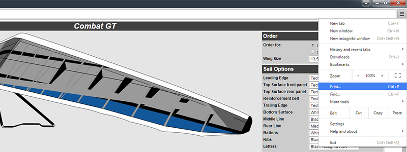
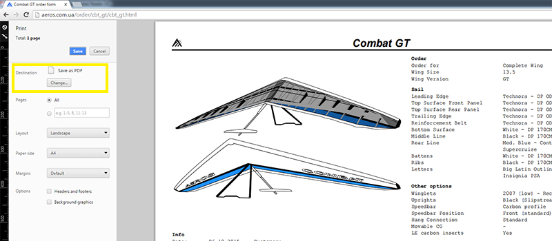
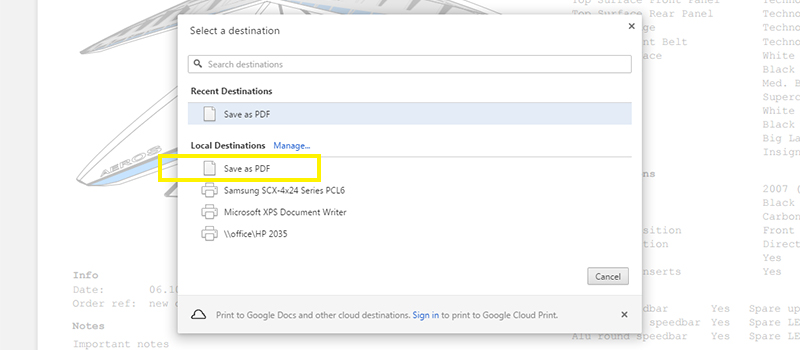
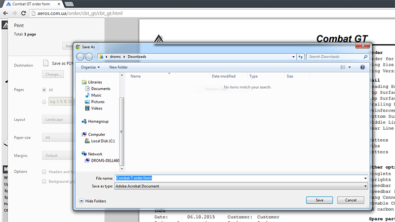
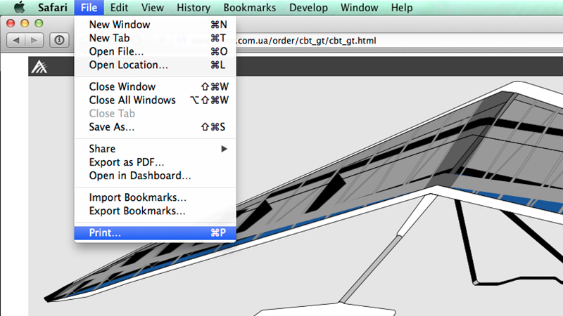
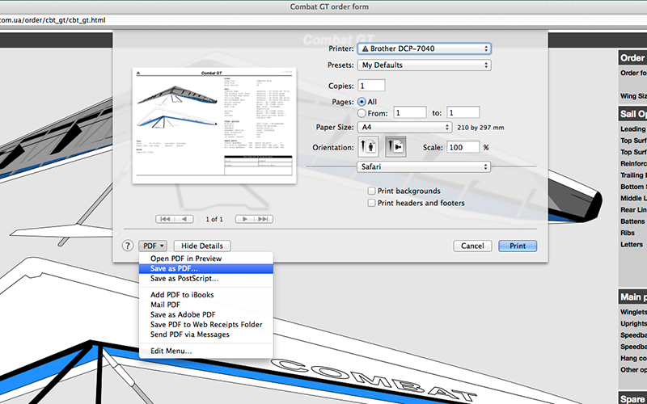
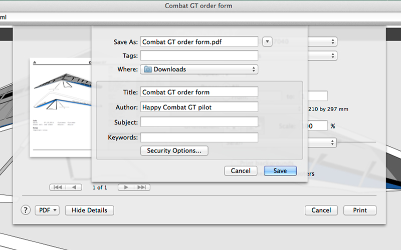

Click Print… in the menu or hit ctrl + P.
In the menu on the left choose landscape layout and A4 paper size. If destination is not set to "Save as PDF" click Change…
Choose "Save as PDF" from Local Destinations
And that's it. Hit save button and choose where to save the file.
Click Print… in the menu or hit cmd + P.
Choose landscape layout and A4 paper size. On the bottom left click on PDF and choose "Save as PDF…"
Save resulting file.
